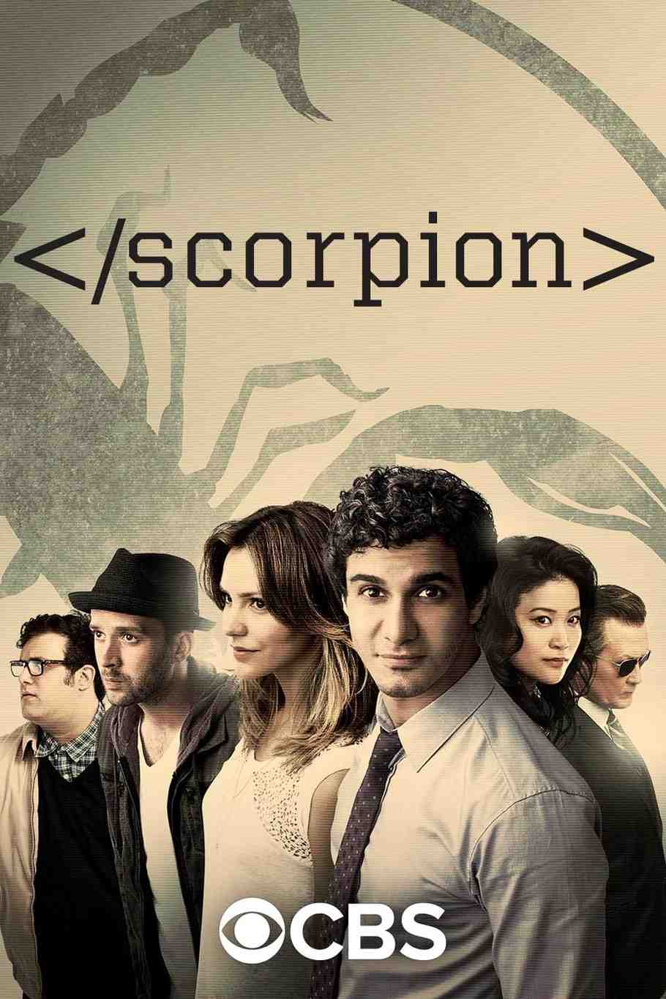

Scorpion
Scorpion takes the MacGyver formula and cranks it up to a whole team of geniuses. Instead of one resourceful hero with a Swiss Army knife, you get a quartet of misfits—each with an IQ well past genius level—who solve impossible problems for the government, corporations, and anyone else willing to pay for their services.
The premise is deliberately over-the-top: Walter O'Brien (supposedly based on a real person) runs a company staffed by the smartest people in their fields. You've got a human calculator, a behavioral psychologist who can read people like algorithms, a mechanical prodigy who can build anything from scraps, and Walter himself, who thinks so fast that human emotion feels like a foreign language. Together, they tackle crises that normal people—and even normal experts—can't solve.
What makes Scorpion work is that it doesn't pretend to be grounded. The show knows it's ridiculous and leans into it. A plane is about to crash because its Wi-Fi is down? They'll improvise a solution mid-flight using a laptop and a car driving underneath. A nuclear reactor is melting down? Give them twenty minutes and some duct tape. The joy isn't in believability—it's in watching hyper-competent people MacGyver their way out of disasters using science, math, and sheer stubbornness.
If you miss that rhythm of setup → improvisation → solution, Scorpion delivers it consistently. Every episode follows the same satisfying structure: impossible problem, frantic brainstorming session, improvised plan that sounds insane, ticking clock, last-second success. It's comfort food for people who like watching smart characters win by being clever rather than by shooting their way out.
The character dynamics add heart to the chaos. Walter is brilliant but emotionally stunted, and the show spends a lot of time on his slow, awkward attempts to connect with normal humans—especially Paige, a waitress-turned-liaison who translates the team's genius into language regular people can understand. The found-family element is strong here. These are people who don't fit anywhere else, who've spent their lives being too smart for the room, and who finally have a place where being weird is not just accepted—it's essential.
Scorpion isn't trying to be prestige TV. It's not deep, it's not subtle, and it definitely doesn't care about realism. But if you want a show where problems are solvable, where intelligence is celebrated, and where every episode ends with the good guys winning because they out-thought the bad guys, this is exactly what you're looking for. It's MacGyver energy, scaled up and shameless about it.
